Cartridge Carousel Internal Fan Removal and Replacement Procedure
Background
The Cartridge Carousel has 3 fans: 2 external fans (2-wire connectors) and 1 internal fan (3 wire connector).
The connectors on the wires of the external fans are hand labeled with '1' or '2'.
The PCB has 3 connector ports labeled Fan1, Fan2, and Fan Int. that correspond with the labeled wires.
The Cartridge Carousel has 2 temperature sensors.
The connectors on the wires of the temperature sensors are hand labeled with '1' or '2'.
 The PCB has 2 connector ports labeled T-Air1 and T-Air2 that correspond with the labeled wires.
The PCB has 2 connector ports labeled T-Air1 and T-Air2 that correspond with the labeled wires.
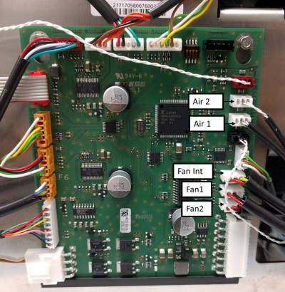
Parts and Materials Required
- Clean absorbent bench pads
- Clean flat work surface
 Fusion, Cartridge Carousel, Fan (Sanyo Denki, green cable sheath)
Fusion, Cartridge Carousel, Fan (Sanyo Denki, green cable sheath)
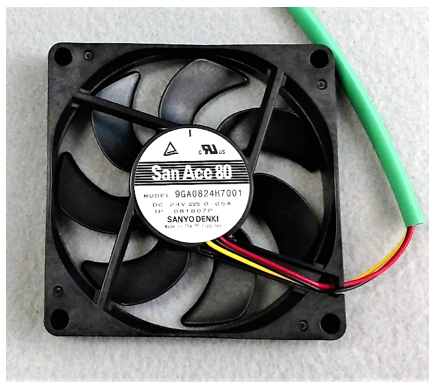
Time Required
- 90 minutes including post-repair alignment, verification, and 10-cycle PCR OQ
Procedure
- Put on proper PPE.
- Before proceeding, confirm Internal Fan failure through Service Software by reading the Internal Fan Speed in the Actors tab within the Cartridge tab. Nominal fan speed is 2400 RPM. Fan speed below 1200 RPM will generate warning messages in System software. Read fan speed multiple times to confirm.
- On a sturdy flat surface like a lab bench, lay out absorbent bench pads to create a work surface for removed components.
- Remove the Cartridge Carousel.
- From the Cartridge Carousel PCB, unplug the 11 cables.
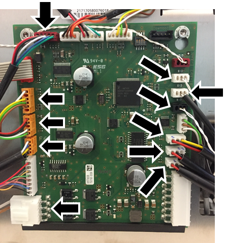
- Feed the disconnected cables through the cutouts of the Cartridge Carousel metal housing.
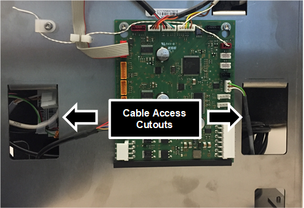
- To remove the black Styrofoam housing from the metal housing, use a 3mm long-handle hex driver to remove all 4 screws holding the Styrofoam housing to the metal housing.
- Hang the Cartridge Carousel over the edge of your work surface to access the 4 screws.
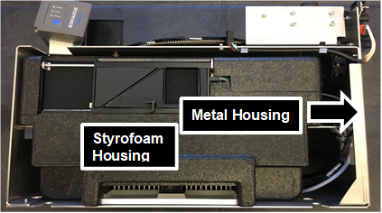
.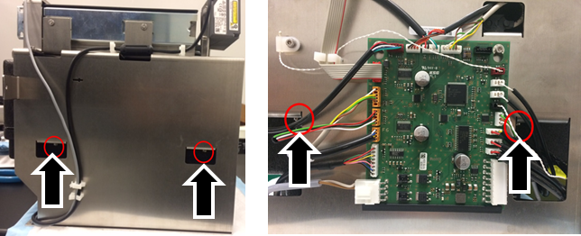
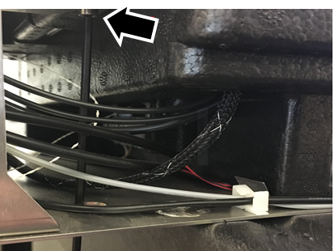
- In the direction shown, slowly slide the Styrofoam housing away from the metal housing.

Note—Take care that the disconnected cables do not catch on the metal housing as they are pulled away from the frame. 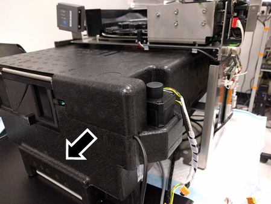
- Remove the black tape (one piece on two sides of the Styrofoam chiller) and set aside to replace after repair is complete.
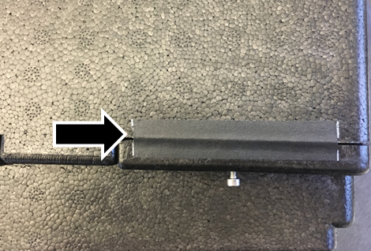
- Lift the top lid of the Styrofoam chiller to expose the storage carousels and the internal fan.
- Using a 2.5 mm hex-driver, loosen (but do not remove) all 7 screws securing the upper storage carousel.
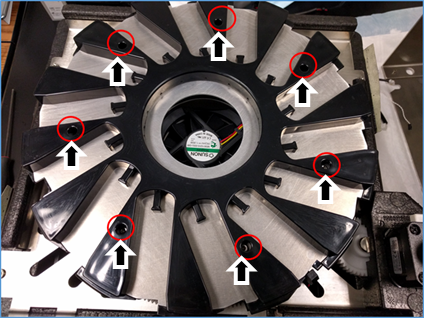
- Lift and remove the upper carousel and set aside.
- Using a small adjustable wrench, 5mm crescent wrench, or 5mm nut driver, loosen the 7 standoffs securing the lower storage carousel.
- Lift and remove the lower storage carousel and set it aside.
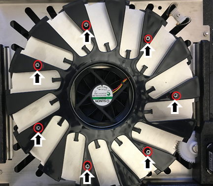
- Using a 2.5 mm Hex driver, remove and save the 4 screws securing the internal fan to the housing plate but leave the fan in place.
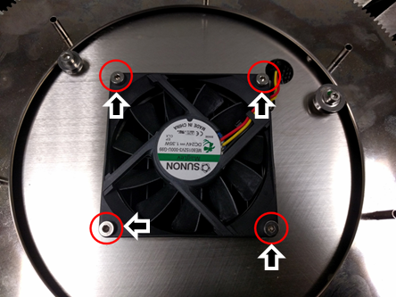
- Using a flat-head screwdriver, carefully lift the fan mounting plate up while simultaneously gently pulling on the walls of the Styrofoam housing to release the fan mounting plate from the Styrofoam case.
Note—You only need to free the plate so that you can remove the fan, the plate should not be removed from the Styrofoam case. 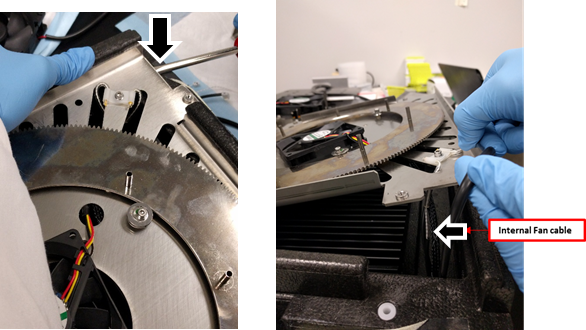
- Remove the internal fan.
Note—Take care not to remove or strongly pull on any of the other cables that are routed through the same port in the Styrofoam. - Using a screwdriver as a lever if necessary, gently place the new fan into the same position as the old fan.
- Orient the new fan so that the wires are closest to the port in the metal housing for ease of routing.
- Secure the new fan with the 4 screws from the old fan.
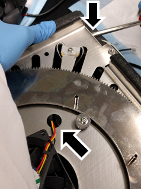
-
Route the fan cable through cable port in the metal housing plate and then through the Styrofoam housing.
-
Replace the fan mounting plate by gently pushing it down into place taking care not to pinch any cables.
-
Replace the lower storage carousel with the standoffs.
Look from beneath the carousel to align the standoffs in the posts.
Note—PAY ATTENTION TO THE ORIENTATION OF THE CAROUSEL. - Position the teaching slot slightly counter-clockwise relative to the home window in the gear plate (see figure below).
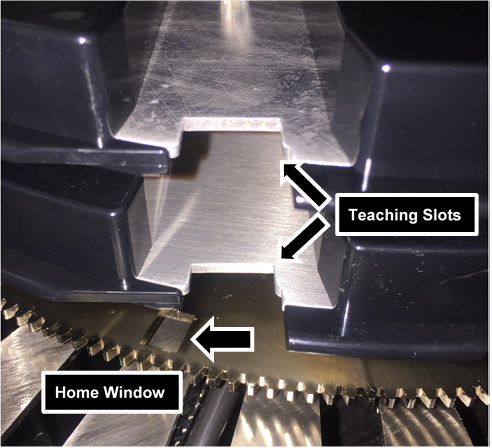
- Using a 5 mm crescent wrench or 5 mm nut driver, secure the standoffs with a small adjustable wrench but do not over-tighten.
- Replace the upper storage carousel by aligning the upper teaching slot with the lower teaching slot.
- Once aligned, tighten the 7 screws with a 2.5 mm Hex driver to secure the upper storage carousel.
- Replace the top lid of the Styrofoam chiller.
- Replace the black tape.
- From the back and pushing towards the front of the metal housing, slide the Styrofoam chiller into the metal housing.
Note—Take care of the cables. Do not trap them under the Styrofoam housing or get caught on the metal frame. - Secure the Styrofoam housing to the metal housing with the 4 screws from Step 6.
- Replace each figure according to the image.
NOTE—The only connectors that can be misplaced are the fan cables (2 external and 1 internal) and the storage thermistors (storage 1 and storage 2). The connectors are labeled '1' or '2' by hand on the side of the connector. 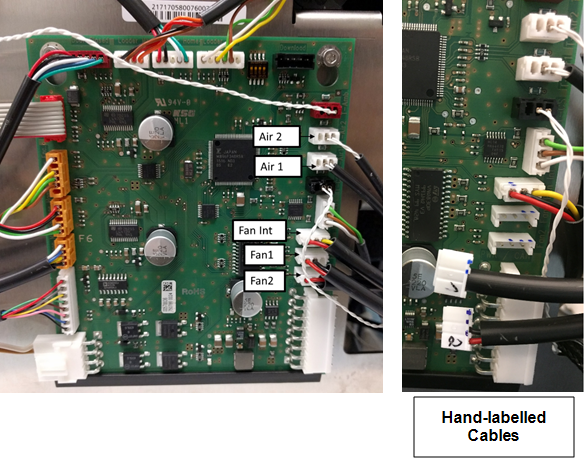
- Return the module to the system referring to Cartridge Carousel Replacement Procedure.
- Record the Cartridge Storage Carousel Module Serial Number located on the side of the module in the Service Record.
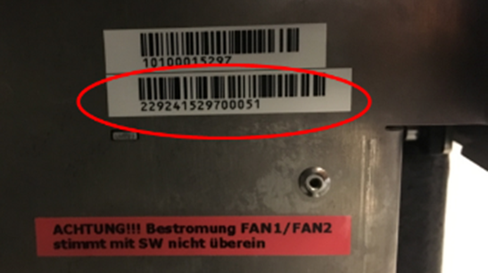
- Proceed to Verification.
Verification
- Verify the new Internal Fan operates to specification.
- Login to Service Software.
- Under 10. SC-Cartridge tab, from the drop-down, select SideCar > Cartridge Control.
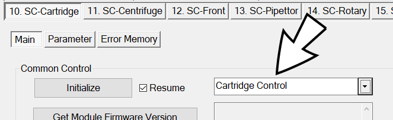
- Click Initialize.
- Wait 20 minutes for module to reach steady-state temperature.
- Match the following specifications:
- Peltier temp. = 15°C (± 2.5°C)
- Storage temp. = 15°C (± 2.5°C)
- Nominal fan speed = 2400 RPM
- Perform a 10-cycle System PCR Cartridge OQ at all modules referring to Panther Fusion System OQ Test.
Note— You need to select only PCR Cartridges. - Perform Teach Rotary Distributor to Carousel Storage.
- Perform Instrument Setup to save the newly taught positions.
- Collect the Instrument Setup Logs (C:\Stratec\Logs).
- Attach the collected logs to the Service Record.
- Verification is complete.
 button at the top of the page to send feedback, comments, or change requests.
button at the top of the page to send feedback, comments, or change requests.